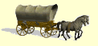

Smithsburg, MD was founded in 1812 by Christopher "Stuffle" Smith. He purchased a plot of land formerly known as "part of Shadrack's Lot." The community's development was directly influenced by factors such as migration paths, the arrival of the railroad, and advances in agricultural technology. By 1923, much of the existing village had been erected. Smithsburg was incorporated in 1846.

Smithsburg acted as a hospital town during the American Civil War in 1862, treating wounded soldiers from nearby battles at South Mountain and Antietam. On July 5, 1863, Confederate General James Stuart and Union General Kilpatrick exchanged artillery fire over Smithsburg. A cannon ball from this exchange can be found lodged in the wall of a building on Water Street. Kilpatrick continued the advance to Boonsboro, Maryland after the engagement on July 6.
An incident involving slaves in May 1845 proved to be violent for the people of Smithsburg. Twelve runaway slaves from Leesburg, Virginia had been seeking their way to freedom in the North when a man who considered himself to be a professional slave catcher, who had only supposed the group to be runaways, noticed the party making their way passed his home at three o’clock in the morning. Beckoning the town constable and six other men to apprehend the runaways, the supposed leader exclaimed, “Now, boys, G-d d--n you, fight!” Armed with pistols and tomahawks, the Virginia runaways had the upper hand as the rural Smithsburg men only exhibited clubs and sticks for protection. A skirmish took place which had badly wounded some of the Smithsburg men, “Constable Flora was twice knocked down, Price had his arm nearly severed and the bone broken, by a blow from a tomahawk he also had a pistol snapped in his face, which unfortunately failed to go off…Shank was several times felled to the earth, and the whole party more or less injured.”[3] Despite their efforts, only four slaves were captured - two by the Smithsburg troop and two more in an adjoining town, Leitersburg - yet the bulk of the runaways presumably were successful in their audacious escape into Pennsylvania.
During the Gettysburg Campaign, on the afternoon of July 5, 1863, Federal cavalry defended Smithsburg from an attack led by General J.E.B. Stuart and Confederate cavalry during their retreat from the Battle of Gettysburg.
President Lyndon Johnson, his wife Lady Bird Johnson, and their daughter Lynda Bird Johnson, visited St. Ann's Episcopal Church in Smithsburg on Easter Sunday, March 26, 1967. During his term, Johnson visited Smithsburg many times due to its close proximity to Camp David. In 1963, President and First Lady Johnson were on their way from Camp David to a Church in Hagerstown, Maryland. Along their route was a junkyard known as "Elwoods Auto Exchange" which the first lady felt "ruined the beautiful landscape". She requested the driver pull the limousine onto the shoulder of the road. She then marched up the dirt road to the main office and proceeded to give Elwoods Grimm "a piece of her mind regarding the unsightliness of the wrecking yard." Two years following this occurrence the Highway Beautification Act was passed by Congress. The Auto Exchange is still in operation and is now hidden by a line of pine trees which blocks its view from the main highway. While there is no documentation of Lady Bird's rant, several documents are available through the Lyndon Baines Johnson Library and Museum which show her acknowledgements of the unsightliness of the Auto Exchange.
On June 9, 2022, Three people were killed and a fourth was wounded in a mass shooting that occurred at Columbia Machine, Inc., previously known as Bikle Manufacturing. Shortly after, a state trooper was wounded as well as a suspect during an exchange of gunfire. The suspect was then arrested and subsequently charged, he was later indicted for murder, attempted murder and using a firearm during a violent crime in July, 2022.